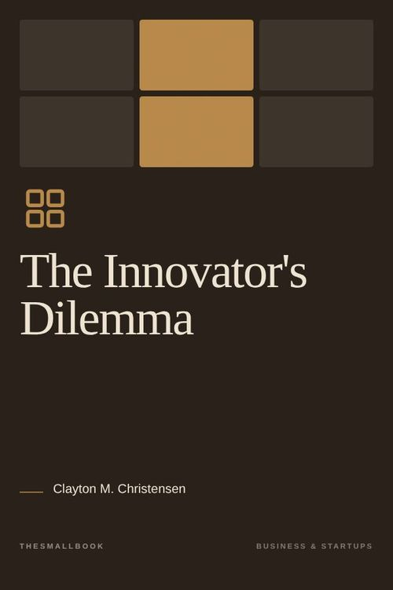

Why Did Debenhams Fail?
242 Years of Department Stores, Liquidated Over Video Calls
What happened
Debenhams dated its lineage to 1778 and anchored British high streets with 142 stores. Pandemic lockdowns killed its rescue financing; the lenders - US hedge funds who had bought its debt for pence - declined to save the physical business they now partly owned. In December 2020 the liquidation was decided over a video call; online rival Boohoo bought the brand name for £55 million and kept none of the 12,000 staff.
The fatal mistake
Loading a department store with private-equity debt across two buyouts, leaving nothing for the decade when shopping moved online and then indoors.
The lesson
Leverage decides who owns the endgame. When lenders hold the debt, they will happily liquidate the operating business and keep the logo - plan for the creditors you have, not the shareholders you had.
The antidote book

Great companies fail not despite good management but BECAUSE of it: listening to best customers blinds them to the disruption below.
READ THE SUMMARY OPEN INTERACTIVE BOOKQuestions people ask about Debenhams
Why did Debenhams fail? Loading a department store with private-equity debt across two buyouts, leaving nothing for the decade when shopping moved online and then indoors.
How much was lost? 12,000 jobs; the brand sold to an online rival for £55 million; every store closed
What is the lesson? Leverage decides who owns the endgame. When lenders hold the debt, they will happily liquidate the operating business and keep the logo - plan for the creditors you have, not the shareholders you had.
Debenhams kyun fail hua? In simple English: Loading a department store with private-equity debt across two buyouts, leaving nothing for the decade when shopping moved online and then indoors. The cost was 12,000 jobs; the brand sold to an online rival for £55 million; every store closed.
Keep digging
More business failures · Open the full Graveyard
Read the antidote book summary: The Innovator's Dilemma
Related failures
- Why did Skype fail? 2025 · The Verb That Lost a Pandemic It Should Have Owned
- Why did JOANN fail? 2025 · The Craft Shelf Lost Its Footing
- Why did rue21 fail? 2024 · Three Bankruptcies Were the Market's Answer
- Why did Zee-Sony Merger fail? 2024 · A $10B Media Titan Blown Apart by Promoter Egos
- Why did Tupperware fail? 2024 · The Party Ended After 78 Years
- Why did The Body Shop fail? 2024 · The Ethical Beauty Pioneer That Couldn't Outlive Its Founder's Shadow
They paid full price. You get the lesson in simple English.